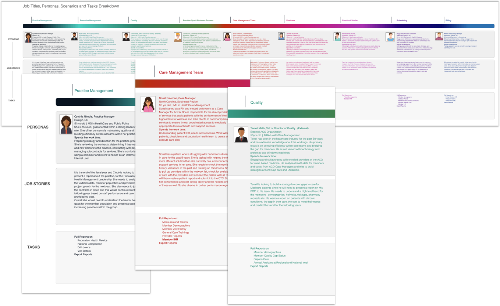

ACO Population Health Management
Designing enterprise clinical services platforms that connect care management teams with the data, workflows, and insights they need to improve outcomes at scale.
Connecting care teams with the data that drives outcomes.
Care management teams wanted a high-level view of how they were performing and what metrics they would be measured on. We pulled data from the National Patient Care Opportunity Report to find measurement metrics, used the financial report to compute targets, and pulled actuals from the monthly health system summary report.
For measures with defined goals, we surfaced those goals on each card — so users could immediately see where their organization stood relative to regional benchmarks.
"If I had one hour to save the world, I would spend fifty-five minutes defining the problem and only five minutes finding the solution."
Understanding the people behind the data.
The ACO platform served a range of clinical and administrative roles — from Practice Managers overseeing day-to-day operations to Directors of Quality focused on outcomes and compliance. Understanding how each role engaged with performance data was critical to designing a system that felt relevant and actionable at every level.

Core personas — Practice Manager, Care Manager, and Director of Quality.